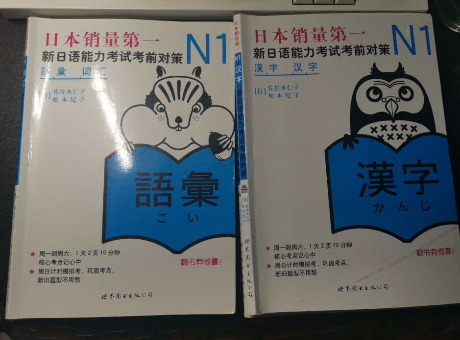
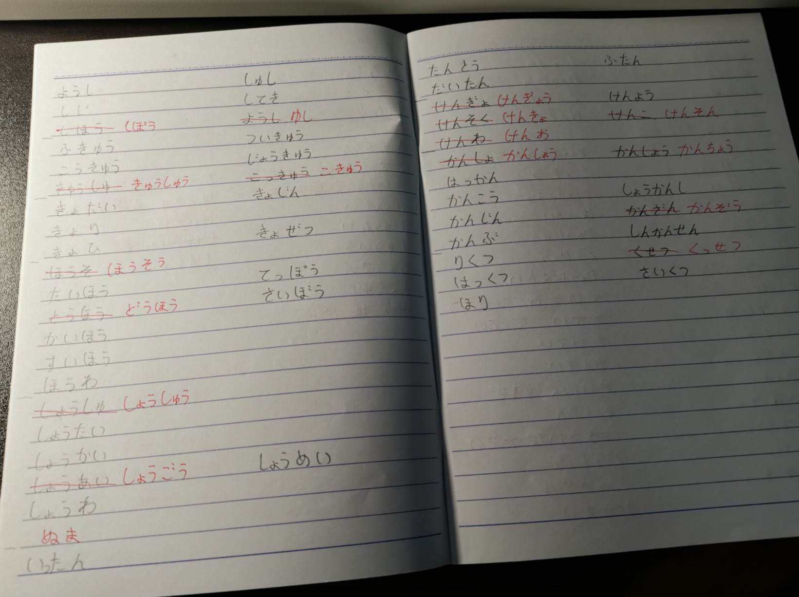
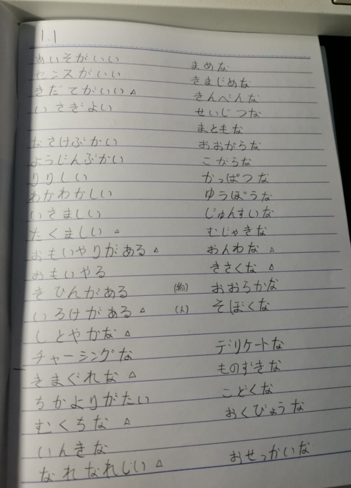

这篇说一说词汇方面的应试或是做题。
我学的很辛苦，但是发现一做题就错（我做的是红蓝宝书），「しゅ」、「しゅう」、「しょ」、「しょう」完全分不清，想要通过平常的积累把这些东西理清楚，是很困难的，这里非常忌讳摸棱两可的记法。事实上就算是汉语，如果没经历过语文考试的训练，也有不少字是会念错音的。但如果是以考试为目的的话，当然有对策。一个汉字的读法一般是固定的或是有几种变数，考试喜欢把一些细节加以混淆，出一些很相似的读音，那么应试手段就是把近音词、多音词、同类用法的词一次记忆，然后通过题目去巩固，当然背单词表是可以的，但是效率上不能让想快速通过考试的朋友（比如我）满意。
这个方法，是我最近翻了翻老师借给我的书后想要尝试的，此前我在刷 N1 词汇表，效率和效果都不大行，而跟着这两本书从背单词的过程就给了我能解决做题困难的感觉。

我想说的并不是掌握了方法之后能够降低学习量，这是做不到的，但我想尽可能用自己的学习经历来降低一些学习过程中的，尽量减少遗忘的部分，提高学习时间的利用率，用方法来压榨自己。
在背「漢字」这本书时，我会将书中的假名盖住，自己在本子上对着中文写假名，写完后纠正，而复习的时候就会根据我写的假名把汉字想出来，如果对着假名和汉字都有的词汇去复习，大脑就会偷懒，效果不好。

我觉得「語彙」的练习更加鬼畜些，我使用的方法是把假名抄写下来，然后一遍遍的对着假名说出汉字和意思，因为重复汉字少，所以覆盖的词汇比「漢字」书里要多不少。

如果仅仅对着单词表看，容易陷入发呆的状态，或是感觉自己都记下来了，其实记得都很模糊，不经考，所以使用背诵和默写的方式来避免不可控的偷懒。
红蓝宝书写的很好，在答案里还会有不少扩展，但对于应试来说，效率不是很行，如果是以拿证为目标的话，可以考虑优先记整张试卷都有用的词汇，比如口语中常用到的。
后记：过于枯燥，我没坚持下去。